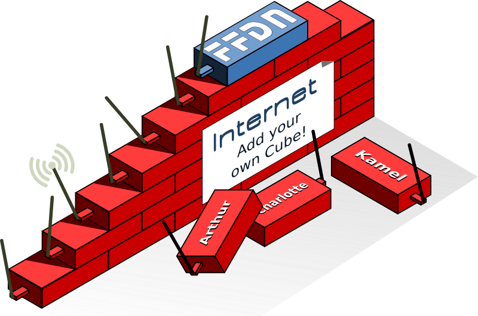

How to install your Înternet Cube
You will need ...
- An ARM board among:
Olimex
LIME1
or
LIME2,
or Orange Pi Zero PC+
- ... with a power supply
- ... and a network cable
- A micro-SD card Class 10, with at least 8 GB capacity (for example the Transcend 300x)
- A
.cubefile from a friendly ISP to configure the VPN (strongly recommended) - A WiFi adapter (free or non-free) if you intend to use the Hotspot
Step #1 - Download the image and flash it on your SD card
- Download the image for your ARM board on this page
- Download Etcher for your operating system on this website
-
Plug your SD card in your computer and flash it with Etcher:

Step #2 - Power up and connect to your ARM board
- Plug the SD card in your ARM board
- Plug the Wifi dongle
- Plug your network cable (on both sides!)
- Plug the power supply and wait about 5 minutes to let the board start
-
Open your Internet browser, and go to https://internetcube.local
- The first time you do this, your browser will display a certificate warning because it cannot verify the authenticity of the connection. This is expected and you should be able to continue by adding a security exception.
Troubleshooting (if you are not able to connect to the Internet Cube's interface)
- Sometimes SD cards connectors can get a bit dusty and blowing in them can help...
- Make sure the network port is blinking, which indicates that it's indeed connected to the network.
- In either case: it's okay to unplug/replug the power supply to reboot the ARM board if you fixed the issue.
Step #3 - Fill the form and start the installation
- Fill the install form we requested information
- For newcomers, we strongly recommend:
- choosing a
.nohost.me/.noho.st/.ynh.frdomain (automatic DNS configuration) - enabling the VPN (to bypass your commercial ISP's limitations) using a
.cubefile
- choosing a
- Start the installation ... it should take between 10 to 20 minutes!
Step #4 - Enjoy your Internet Cube!
If you got this far, your Internet Cube should be working! Congratulations!
Here are some recommended first steps:- Check that you're able to access your admin
interface at
https://internetcube.local/yunohost/admin - In the admin interface, go to the 'Diagnosis' section and see if some important issues were identified
- Test from your web browser that you're able to access your Internet Cube using its public main domain that you chose during the installation
- If you enabled the WiFi hotspot, test that you're able to access your new hotspot.